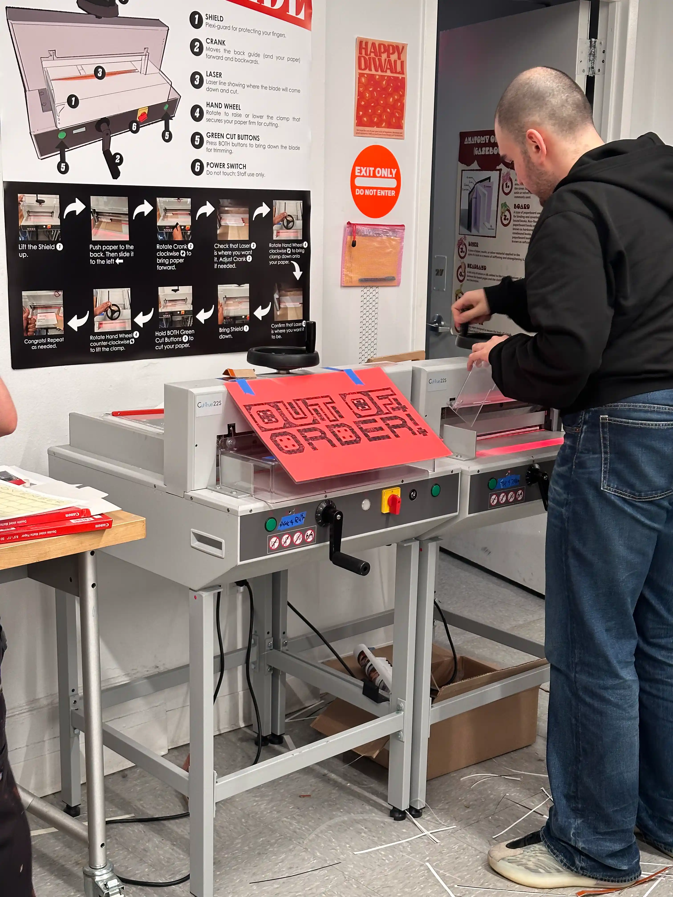

I redesigned some outdated signs using the letterpress to help spruce up the Design Lab (a student printinig lab).





Student lab technicians are often in the space also utilizing resources but not on shift, but because they are so recognizable they get asked questions as if they were on shift. Hence, the 'Not Working' sign was created. asiugeherjdeaf

I also made shirts out of the signs, as an inside joke for the people who worked in the lab and those who frequent the space often.


'No Eating' sign variations.